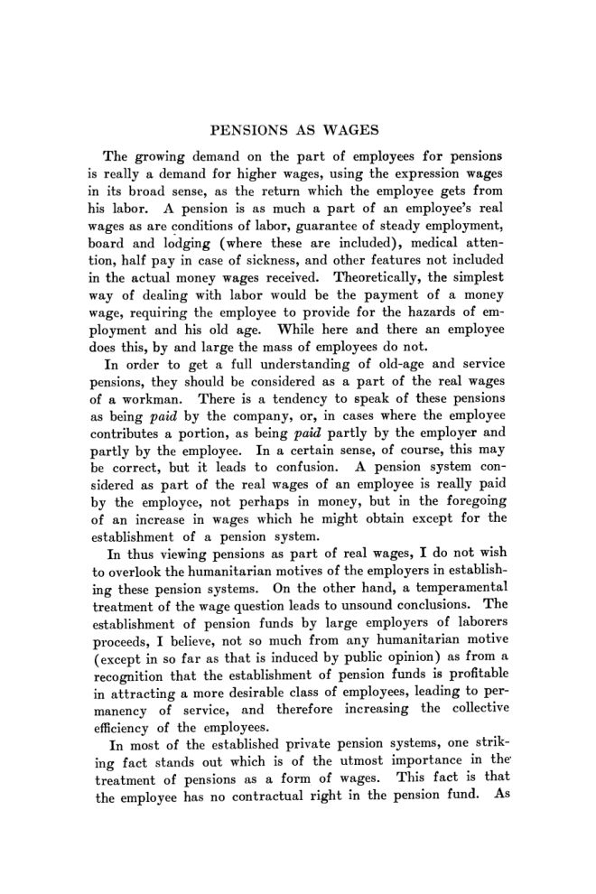

DeRoode, 1913: a pensão como salário adiado
Leitura: 8 min
Albert deRoode argumenta que a pensão é parte do salário, que os planos privados sem direito contratual transferem ao empregado o risco da velhice e propõe regras para um plano público com reservas e devolução.


O plano de pensões da International Harvester Company pagava, por ano de serviço, 1% do salário médio dos dez anos anteriores à aposentadoria, com mínimo de US$ 18 e máximo de US$ 100 por mês, a quem se aposentasse aos 65 anos com pelo menos vinte de casa. O mesmo regulamento dizia que nada nele criava contrato nem dava a qualquer empregado direito de permanecer no emprego ou de receber pensão. Albert deRoode cita a cláusula no número de junho de 1913 da American Economic Review e constrói a partir dela o argumento do artigo.
Quem paga a pensão?
A tese vem na primeira frase: a demanda crescente dos empregados por pensões é, na verdade, uma demanda por salários mais altos, no sentido amplo de tudo o que o trabalhador recebe pelo trabalho. A pensão faz parte do salário real, como as condições de trabalho, a garantia de emprego, a casa e a comida quando incluídas, a assistência médica e o meio salário na doença. Costuma-se dizer que ela é paga pela empresa, ou em parte pela empresa e em parte pelo empregado. DeRoode acha a linguagem enganosa: quem paga é o empregado, não em dinheiro, mas no aumento de salário de que abre mão.
O autor não nega os motivos humanitários, mas avisa que tratar a questão salarial pelo temperamento leva a conclusões erradas. Em sua avaliação, as empresas criam fundos de pensão menos por humanidade do que por reconhecerem que eles atraem empregados melhores, prolongam o tempo de serviço e aumentam a eficiência coletiva.
O que muda quando não há direito à pensão?
O fato decisivo da maioria dos planos privados é a ausência de direito contratual. Além da cláusula da International Harvester, DeRoode reproduz a regra nº 9 das New York Central Lines, segundo a qual nenhuma decisão da diretoria dava ao empregado direito a pensão. O empregado renuncia a um aumento em troca da pensão, mas não adquire direito a ela; falta o que os juristas chamam de reciprocidade de contraprestação.
Os tribunais tendiam a confirmar o arranjo. Num caso de Nova York, McNevin contra Solvay Process, a corte decidira que o empregado demitido de uma empresa que mantinha fundo sem contribuição dele não tinha direito à parte acumulada, que seria uma doação incompleta até o pagamento. DeRoode sugere que, levada a outros tribunais, a cláusula poderia ser derrubada por falta de contraprestação ou por contrariar a ordem pública. Seja como for, a intenção do empregador é clara.
Para o empregado, o atrativo da pensão é a provisão para a velhice. Com ela, pode adotar um padrão de vida mais alto e gastar o que, prudente, guardaria. Sem direito contratual, porém, não tem garantia: pode morrer, ser demitido a qualquer momento ou ver a empresa falir, e a proteção imaginada desaparece. Se morre antes do prazo, suas economias para a velhice se perdem, salvo quando há seguro de vida associado. É, na prática, uma tontina, arranjo que as melhores leis de seguro do país haviam proibido.
Quanto vale a promessa?
DeRoode faz a conta com o plano da International Harvester. Um empregado que entra aos 25 anos, sai aos 65 depois de 40 anos de serviço e tem salário médio de US$ 1.200 nos últimos dez anos receberia US$ 480 por ano. Uma anuidade desse valor custava US$ 4.324 numa das grandes seguradoras. Para acumular essa quantia em 40 anos, seria preciso guardar US$ 50,03 por ano. Esse é, grosso modo, o aumento anual de salário de que o empregado abre mão. As perdas por mortes e demissões no grupo não o beneficiam; reduzem o custo do sistema para o empregador.
Daí três consequências sociais. A primeira é uma estratificação da classe trabalhadora: quem acumulou vinte anos de pensão não arrisca mudar de ofício ou buscar melhora. A segunda é a perda de liberdade diante do empregador, já que a pensão depende de sua boa vontade. A terceira é a tendência a salários monetários mais baixos, ou estáveis, sem resposta à alta do custo de vida.
“meras peças muito astutas de barganha salarial” (“merely very shrewd bits of wage bargaining”)
A conclusão sobre os planos privados é dura: dão a sombra da provisão para a velhice e não a substância.
E as pensões do serviço público?
A segunda metade do artigo aplica o mesmo princípio aos servidores. O governo é um empregador peculiar, porque o empregador real é o povo, e os empregados, pelo voto e pela influência, participam da fixação de suas próprias condições; por isso, diz DeRoode, considera-se imprudente que o trabalho público se organize como o privado, e o governo deveria ser o primeiro a reconhecer as necessidades legítimas de seus empregados. Não havia sistema geral de pensões nos serviços federal, estaduais e municipais, só planos para professores, policiais e bombeiros, e mesmo neles, em geral, quem saía ou morria perdia o valor acumulado.
A falta de pensão, argumenta, produz uma pensão sem benefício. Funcionários são mantidos muito além do tempo útil, porque é fácil satisfazer impulsos caridosos à custa do público, e o governo perde duas vezes: no trabalho ruim e no bloqueio das promoções, que afasta candidatos eficientes.
O impasse federal opunha quem queria o governo pagando a pensão a quem queria o servidor contribuindo do próprio salário. DeRoode reformula o problema: se a pensão é salário, a questão é se os salários atuais bastam para exigir a contribuição. Prefere que o governo pague a pensão além dos salários atuais. Seu exemplo são dois servidores de 35 e 45 anos com o mesmo salário de US$ 1.200. No plano contributivo, o mais velho precisaria contribuir mais, mas o reajuste viria igual para todos; com o governo pagando, a contribuição maior para o mais velho poderia ser lembrada na hora de seu próximo aumento, e os salários se ajustariam caso a caso. Exigir que o servidor pague com o salário atual e confie em aumentos futuros o empurraria, adverte, para a barganha coletiva, ou para o lobby e a pressão eleitoral.
O plano proposto tem quatro princípios: pagar o necessário ao fundo acima da escala atual de salários; tratar cada pensão individualmente, para que o fundo não vire saco de favores; constituir reservas ano a ano por cálculo atuarial, com o rigor das seguradoras e das ferrovias; e devolver ao servidor que sai, ou aos herdeiros, o valor acumulado da pensão, ou uma pensão menor equivalente. A devolução só começaria depois de cinco ou seis anos, para não premiar o serviço temporário. Ela facilitaria demitir o ineficiente, que deixaria de perder uma soma considerável, e evitaria criar uma classe de ocupantes de cargos presa à espera da pensão.
Na minha leitura
Na minha leitura, o artigo é uma aplicação disciplinada de uma ideia simples: se a pensão é salário, quem a paga é o trabalhador, e a pergunta relevante passa a ser de quem é o direito. Com uma conta de anuidade, DeRoode mostra quanto vale a promessa e quanto se perde ao sair, e transforma uma discussão moral sobre generosidade patronal numa discussão sobre risco e mobilidade.
As propostas para o setor público antecipam o vocabulário atuarial que se tornaria padrão: reservas constituídas ano a ano, contas individualizadas e devolução do valor acumulado após um período de carência. E a observação de que pensões não portáveis prendem o trabalhador ao emprego e contêm salários continua sendo o argumento central a favor da portabilidade.
Glossário
- Salário real
- tudo o que o trabalhador recebe pelo trabalho, em dinheiro e em benefícios, e não só o salário monetário.
- Anuidade
- renda periódica comprada de uma seguradora mediante pagamento único ou parcelado.
- Tontina
- arranjo em que as contribuições dos que morrem ou saem revertem aos que permanecem.
- Plano contributivo
- plano de pensão financiado, no todo ou em parte, por descontos no salário do empregado.
- Reserva atuarial
- fundo constituído ano a ano, por cálculo de probabilidades, para pagar as pensões futuras.
- Portabilidade
- direito de levar o valor acumulado da pensão ao deixar o emprego.
Fontes
- Pensions as Wages — Albert deRoode (pp. 287–295). JSTOR · Internet Archive (PDF)
- Edição completa, com os demais artigos: Nº 124 do Arquivo.
Documento em domínio público (EUA, publicado antes de 1931), via JSTOR Early Journal Content e Internet Archive. Resumo e comentário do autor deste site, sem afiliação com a American Economic Association. Encontrou um erro? Escreva: a correção é publicada no próprio texto, com data.
← Hammond, 1913: como os juízes australianos definiram o salário mínimo ↑ Nº 124 · Junho de 1913: o salário mínimo australiano e a pensão como salário